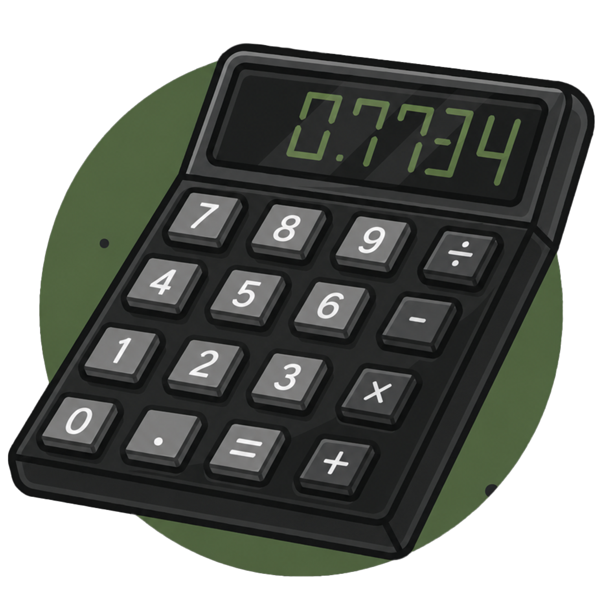
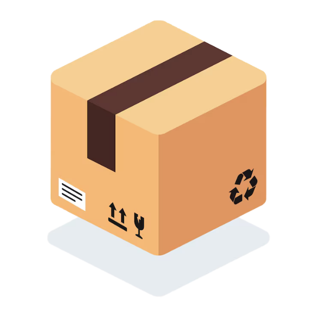

BuildCoat
أصالة
استعادة الأناقة
الحفاظ على التراث
للمباني ذات الطابع الكلاسيكي
خطوط منتجاتنا
استعادة الأناقة
الحفاظ على التراث
للمباني ذات الطابع الكلاسيكي
ثبات عالي
صُنع ليدوم
ميزانية ذكية
يُطبق مباشرة على الطوب الأحمر
تلوين فائق
تجديد الواجهات
إعادة ترميم
للمباني ذات المحارة الناعمة أو الخشنة

تخطيط ذكي بلا تخمين.
الآن يمكنك إدخال مساحة السطح المراد تشطيبه ونوع المنتج — وسنقوم بحساب الكمية المطلوبة والتكلفة الإجمالية بدقة.
استخدم حاسبة BuildCalcخطط لطلباتك واترك الباقي علينا. تتيح لك أداة الجدولة الذكية تحديد طلبات متكررة (شهرية، ربع سنوية، أو مخصصة)، مع تحكم كامل للإلغاء أو التعديل في أي وقت ومن أي مكان.
جدولة طلب
اختر منتجك.
حدد نوع التشطيب الذي يناسب سطحك (إيكو، بريميوم، أو أصالة).
استخدم حاسبة BuildCalc.
أدخل المساحة المطلوبة باستخدام حاسبة BuildCalc الذكية لمعرفة الكمية.
قم بالجدولة أو اطلب الآن.
أتمم طلبك فوراً، أو قم بجدولة توصيل متكرر حسب احتياجك.